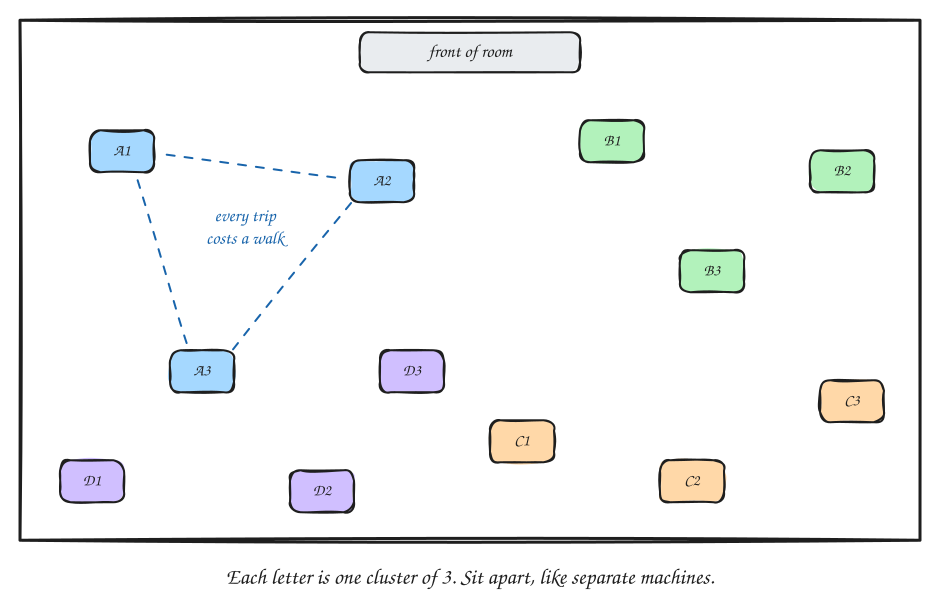

Module 3: Big Data & MapReduce
COSC420 — Distributed/Parallel Computing
Session 1 · Mon Oct 5
What Is Big Data? + The Human MapReduce Cluster
Recap: The Pipeline, Stage Two
Week 1’s opening story: a manager at “StreamBase” hands you a pipeline diagram with six stages and asks you to build it. Modules 1 and 2 built everything underneath that diagram — threads (Module 1), and how separate machines talk to each other at all (Module 2). Starting today, we build the diagram itself, one stage at a time.

HDFS is where the next two weeks live.
Today’s question, stage one: before we can even talk about storing a file across many machines, why does a file need that at all — why isn’t one machine enough?
Recap: Why One Machine Isn’t Enough
Week 1’s StreamBase manager asked about 80 billion events. Quick arithmetic:
- A laptop with 16 GB of RAM holds about 4 billion integers (4 bytes each) in memory at once.
- 80 billion rows is 20× that — about 20 laptops’ worth of memory just to hold one number per row. Real rows (user, movie, rating, timestamp) are several times bigger still.
- Processing 80 billion rows on one machine, one core, at a generous 1 million rows/second, takes over 22 hours — for one pass over the data, one time.
That arithmetic justifies everything in this module: storage has to spread across machines (HDFS), and so does the processing (MapReduce).
Naming It: The Three Vs
Three vignettes from Week 1 were all “big data” problems — today they get a shared vocabulary:
| The “V” | What it means | The Week 1 vignette |
|---|---|---|
| Volume | The sheer amount of data exceeds one machine’s storage | Google’s web index — billions of pages, far more text than one machine could even read through |
| Velocity | New data arrives faster than one machine can keep up | Amazon’s Black Friday — thousands of orders per second, all touching the same inventory data |
| Variety | The data isn’t one clean, uniform shape | Netflix’s recommendation signals — ratings, watches, pauses, skips, even hover time, all mixed together |
Big data = data that’s too big, too fast-arriving, or too messily-shaped (often all three) for one machine to handle alone.
![Three panels side by side. Panel 1, "Volume — too much": a small box labeled "one machine" next to a ≠ sign and a tall stack of six disks labeled "the data"; caption "doesn't fit". Panel 2, "Velocity — too fast": a stream of small event cards flows along an arrow labeled "events/sec" into a funnel above a box labeled "one machine"; extra event cards spill over the funnel's sides; caption "can't keep up". Panel 3, "Variety — too messy": five differently shaped items labeled "rating: 4.5", "photo", "\"pause\"", "raw text" and "hover 3.2 s" point down at a plain grid table with a question mark beside it, labeled "one tidy table expects one shape"; caption "doesn't fit one shape". Along the bottom: "Too much. Too fast. Too messy — for one machine."](diags/03-three-vs.svg)
Batch Processing: Meal-Prep, Not À La Carte
Once data is big in one of these ways, there are two general strategies for processing it:
- Streaming: handle each new piece of data the instant it arrives (out of scope this course).
- Batch processing: collect a pile of it, then process the whole pile at once (this module and Module 4).
- Kitchen picture: a meal-prep Sunday cooks a whole week’s worth of a dish in one big batch; a restaurant cooks each dish fresh the instant the order comes in. Batch processing is the meal-prep Sunday.
- Classic example: process yesterday’s entire log file overnight, results ready by morning. Nobody needs the answer in the next 10 milliseconds, so batching is simpler and more efficient.
MapReduce (Google, 2004 — the paper behind Week 1’s Google vignette) is the framework that made batch processing on thousands of machines practical and programmable. You’re about to invent a version of it yourself.
Today: Become the Cluster
For the rest of this session, no more slides about big data — you’re going to become a small distributed system and solve a real batch-processing problem, before any formal vocabulary shows up.
- You’ll work in clusters of 3 — each of you is a separate “machine,” at a separate desk, not next to each other.
- Each of you gets a slice of a dataset — nobody sees the whole thing.
- Your cluster’s job: combine your three slices into one correct answer, as fast as possible, with teammates spending as little time waiting as possible.
Activity Setup
- Desks for each cluster are spread apart — corners of the room, not adjacent. Leaving your desk to check in with a teammate costs a real walk, not a whisper.
- Each cluster gets its own shuffled deck (or set of order strips) split three ways. Nobody’s pile is sorted; your slice is a random mix of everything.
- The rule that makes this interesting: every trip to a teammate’s desk costs time, and whoever you leave behind sits idle until you’re back. A good cluster finishes fast and keeps everyone busy.
The task (your instructor will say which version):
- Cards: find the total number of cards of each suit (♠ ♥ ♦ ♣) across all three piles.
- Order strips: find how many times each menu item (burger, fries, salad, pizza) was ordered across all three branches.

Round 1: However You Like
Go. Solve the task as a cluster, any way you want.
One person in each cluster should informally track: how many times did someone leave their desk, and roughly how long did the whole cluster take?
Don’t overthink a “correct” way to do this — there isn’t one yet. Just get to the right answer.
Debrief: What Happened?
Ask 1–2 clusters to report their trip count and rough time before moving on — don’t editorialize yet, just collect the numbers.
Think about it
Did anyone carry the actual cards (or strips) across the room? Would a written note — just the tally, not the raw pile — have done the same job with less to carry?
Round 2: Minimize Trips, Minimize Waiting
Same task, a fresh dataset (new shuffled deck, or Set B’s strips) — same three teammates.
The challenge: redesign your cluster’s strategy, as a team, before you touch a single card or strip. Your new strategy should try to minimize both:
- Trips — how many times anyone leaves their desk
- Idle time — how long anyone sits around waiting on a teammate
Take 2–3 minutes to plan out loud as a cluster. Then go, and track your trip count and time again.
Debrief: Naming What You Just Invented
Compare Round 2’s trip count and time to Round 1’s, cluster by cluster.
Most clusters converge on something like this:
- Each person first sorts and tallies their own pile, alone at their desk — no walking yet.
- Then only a small written tally, not the raw pile, travels to whichever teammate “owns” that suit or item.
- That teammate adds up everything handed to them.
| What your cluster just did | The real term (Wednesday gives you the details) |
|---|---|
| Each of you sorting/tallying your own pile, alone at your desk | Map — parallel, zero travel cost |
| Writing a small tally instead of carrying the raw pile | A combiner — a real optimization Hadoop/Spark use: shrink the data before it travels |
| Carrying a tally to the one teammate who “owns” that key | Shuffle — the only phase that costs a physical trip |
| That teammate summing everything handed to them | Reduce |
| Sitting and waiting on a teammate’s tally before you could finish | A straggler — a real job finishes only when its slowest worker does |
Bridge to Wednesday
You just invented Map, Shuffle, and Reduce with cards or paper — Wednesday gives what you did precise names, a worked example (counting words instead of suits or menu items), and the actual code shape behind it, ahead of Checkpoint 3.
(Reminder: Engaged Learning Activity EL1 — Python self-study module 1 — is due Wednesday, Oct 7.)
Session 2 · Wed Oct 7
The MapReduce Paradigm + Checkpoint 3
Recap: What You Did Monday
Monday, in clusters of 3, you solved a counting problem with nothing but your own bodies, a shuffled pile each, and a rule about minimizing trips. Most clusters converged on the same shape:
| What your cluster did | What we’re naming it today |
|---|---|
| Each of you tallying your own pile, alone at your desk | Map |
| Carrying only a written tally to whoever “owned” that key | Shuffle/Sort |
| That teammate summing everything handed to them | Reduce |
Today: the same three ideas, precise definitions, and the actual code shape behind them.
Meet Map, Shuffle, Reduce
MapReduce is a programming pattern for big data: split the dataset into pieces, process each piece independently, then combine the results. It’s what your cluster did Monday, for any number of machines and any counting problem.
![Five columns left to right: Input, Map, Shuffle/Sort, Reduce, Output. Input has three gray boxes, "chunk 1", "chunk 2", "chunk 3", each with an arrow to its own green "map()" box in the Map column. In the Shuffle/Sort column, crossing purple arrows connect every map() box to both green reducer boxes, "reduce() key A" and "reduce() key B". Each reducer has an arrow to an Output box, "result key A" and "result key B". Under the diagram are two rows of labels. Row 1, who writes it: Map "you write", Shuffle/Sort "framework does it", Reduce "you write". Row 2, where it runs: Map "local, in parallel", Shuffle/Sort "crosses the network" in red, Reduce "local, in parallel".](diags/03-mr-phases.svg)
Each machine maps only its own chunk. The framework shuffles everyone’s output so that each key’s values end up together. One reducer per key reduces them to a final answer.
Monday’s Round 2, redrawn with the new names (salad left out to save space):
![Three horizontal bands, top to bottom. Above them, three gray boxes: "Branch 1: raw tickets", "Branch 2: raw tickets", "Branch 3: raw tickets", each with an arrow down into the Map band. Map band, subtitled "alone, in parallel": each branch has its own yellow tally box — Branch 1: burger 5, fries 3, pizza 2; Branch 2: burger 2, fries 6, pizza 5; Branch 3: burger 3, fries 2, pizza 1. No arrows connect branches in this band. Shuffle band, subtitled "the only trips": nine crossing arrows, color-coded by item, carry each branch's burger tally to one owner, each fries tally to a second owner, and each pizza tally to a third. Reduce band, subtitled "one owner per key": three blue boxes "owns burger", "owns fries", "owns pizza", with results burger = 10, fries = 11, pizza = 8. Caption: "Same shape as Monday, just relabeled."](diags/03-mapreduce-flow.svg)
The Map Phase: One Record In, Zero or More Pairs Out
A map function takes one input record and emits (key, value) pairs — nothing more.
map(record):
... extract what matters
from this one record ...
emit(key, value)| Problem | What map() emits |
|---|---|
| Count words in a line of text | emit(word, 1) for every word |
Total sales per region, from region, productID, saleAmount records |
emit(region, saleAmount) |
The same in both: one record in, small (key, value) pairs out. The mapper never looks at another record and never talks to another machine — just like tallying your own pile on Monday.
Think about it
A log file has one line per web request: timestamp, userID, status_code. You want to count how many requests resulted in each status code (200, 404, 500, …). What should map() emit?
Answer: emit(status_code, 1) for every line. It’s word count again, with a different field pulled out of the record. The reducer then sums the 1s for each status code.
The Shuffle/Sort Phase: The Framework’s Job
After every machine finishes its map phase, all the (key, value) pairs must end up grouped by key — every value for "gmail.com" in one place, every value for "yahoo.com" in another — regardless of which machine emitted them.
- It’s Monday’s “carry your tally to whoever owns that key” step — except the framework does the carrying, across a real network.
- You never write this step yourself. Hadoop and Spark do shuffle/sort automatically — it’s the one phase with no function you implement.
- It’s also the one phase that costs real network transfer, just as trips were Monday’s only real cost. Map and Reduce happen locally.
The Reduce Phase: Combine Each Group Into One Answer
A reduce function receives one key and the full list of values shuffled to it, and produces one final result for that key.
reduce(key, values):
total = sum(values)
emit(key, total)- It runs once per key, on whichever machine the shuffle sent that key’s values to — like the Monday teammate who “owned” a suit or menu item.
- Reduce doesn’t have to mean “sum”: it could be a maximum, an average, a count of distinct values — anything that combines a list into one answer.
Word Count Walkthrough
The “Hello World” of MapReduce — Monday’s activity, counting words instead of suits or menu items.
Input (two lines, so two mappers):
the quick brown fox
the fox jumped over the lazy dogMap phase — each mapper emits (word, 1) for every word in its line:
(the,1) (quick,1) (brown,1) (fox,1)
(the,1) (fox,1) (jumped,1) (over,1) (the,1) (lazy,1) (dog,1)Shuffle/Sort — grouped by key (the framework’s work, not yours):
(brown,[1]) (dog,[1]) (fox,[1,1]) (jumped,[1])
(lazy,[1]) (over,[1]) (quick,[1]) (the,[1,1,1])Reduce phase — sum each list:
(brown,1) (dog,1) (fox,2) (jumped,1) (lazy,1) (over,1) (quick,1) (the,3)the came from both mappers, but only one reducer sees all three of its 1s. That’s the shuffle’s whole job.
Pause & Discuss: Average, Not Count
Breather — think on your own (2 min), then we discuss
The capstone’s ratings data has one line per rating:
userId,movieId,rating
1,31,2.5
1,1029,3.0
7,31,4.0You want the average rating for each movie. What should map() emit? What does reduce() do with each movie’s list of values?
Harder follow-up: to cut shuffle traffic, a teammate suggests that each machine first computes a local average per movie, and then the reducer averages those averages. Does that give the right answer?
Answer
map:emit(movieId, rating)— same shape as word count and sales-per-region.reduce:emit(movieId, sum(values) / len(values)). Movie 31 gets[2.5, 4.0]→3.25.
. . .
Follow-up: no. Averaging averages is wrong whenever the groups are different sizes:
| Movie 31’s ratings | Local average | |
|---|---|---|
| Machine 1 | [5, 5, 5, 5] |
5 |
| Machine 2 | [1] |
1 |
Average of averages = (5 + 1) / 2 = 3. True average = 21 / 5 = 4.2.
. . .
Fix: each machine sends a (sum, count) pair per movie — here (20, 4) and (1, 1). The reducer adds them, (21, 5), and divides once at the end. Sums and counts can be combined early; averages can’t. Spark’s avg() (Module 4) does exactly this for you.
Why This Scales
Module 2 put it this way: “a distributed system grows by adding more machines, not by buying an impossibly bigger one.”
- Scaling out: add more machines.
- Scaling up: buy one bigger machine.
MapReduce is the mechanism that makes scaling out work for processing, not just storage.
- Map tasks run in parallel, one per input chunk.
- Reduce tasks also run in parallel, one per key (or range of keys).
- Only shuffle moves data across the network — the one phase that cost a trip on Monday.
- Adding one more machine doesn’t require rewriting
map()orreduce()— it’s one more machine’s worth of chunks processed in parallel. Same code, more capacity.
Data locality: move the computation, not the data
On a real cluster, each map task runs on the same machine that already holds its chunk of data. This is called data locality: compute goes to the data, not data to the compute.
. . .
Kitchen picture: send the recipe to the branch that already has the ingredients — don’t ship the ingredients to one central kitchen.
. . .
Important
This is the same instinct your best cluster found in Round 2: move the small thing (a tally), not the big thing (the raw pile). Data locality is that same idea, one level up — don’t move the raw data to the computation, move the (tiny, by comparison) computation to the data.
What the Framework Handles For You
Beyond running Map, Shuffle, and Reduce, Hadoop and Spark both handle a list of things you never have to code yourself:
- Task scheduling — deciding which machine runs which chunk
- Fault tolerance — if a machine dies mid-job, its work gets reassigned and re-run elsewhere
- Retries — a failed task is retried automatically, not left broken
- Progress tracking — reporting how much of the job is done
You write map() and reduce(). The framework does everything else — a big part of why MapReduce was such a breakthrough in 2004.
Checkpoint 3 Preview
CP3 (last 15 minutes of today’s session): given a map() function and an input dataset, write the map-phase output.
Review before you start:
- What the mapper receives (key = line offset, value = line content)
- What it must emit — (key, value) pairs, same shape as the sales-per-region and status-code examples from earlier in this session
- How to extract the relevant field from each record (e.g. email domain, word, timestamp)
Lab 4 Preview
Lab 4 (this Friday, Oct 9): write your own Mapper and Reducer in Java for an email-domain counter, and run it via the classroom terminal in Hadoop local mode — no HDFS needed yet, that’s next week’s lecture.
Want the pencil-and-paper walkthrough of this same problem first? That’s EL2 (self-study, assigned today, due Friday before Lab 4).
Session 3 · Wed Oct 14
Hadoop: HDFS, YARN & MapReduce Architecture + Midterm Review
Recap: From “How” to “Where”
Last week gave you MapReduce — the program that processes big data, split into Map, Shuffle, and Reduce.
But every one of those tasks has to run somewhere, reading a file that has to live somewhere. Today:
- HDFS — the file system that stores the data
- YARN — the software that decides which machine runs which task
These are the two real pieces underneath what Lab 4 only simulated in local mode, and what Lab 5 runs for real this Friday.
Why Not Just a Regular File System?
A regular file system — the one on your laptop — lives on one machine’s one disk.
- Its size is capped by that one disk, no matter how the data grows.
- If that disk fails, everything on it is gone — nothing to fall back on.
- All reading goes through that one machine and its one disk — no way to spread the reading work across many machines.
HDFS (Hadoop Distributed File System) splits a file into pieces and spreads those pieces — plus duplicate copies — across many machines’ disks. The file can now be bigger than any single disk, survives a disk failure, and can be read by many machines at once. It’s the same scaling out idea from last Wednesday, now applied to storage.
HDFS Blocks + Replication
- HDFS splits a file into fixed-size blocks (default 128 MB) — a large file becomes many blocks, scattered across many machines.
- Each block is stored on 3 machines, not one (replication factor = 3).
- Kitchen picture: stocking the same popular ingredient at 3 different branches, so one branch’s fridge breaking down doesn’t mean the company runs out.
ratings.csv (say, 500 MB) → 4 blocks: three full 128 MB blocks + one 116 MB block
Block 1 → stored on Machine A, Machine C, Machine E
Block 2 → stored on Machine B, Machine D, Machine A
Block 3 → stored on Machine C, Machine E, Machine B
Block 4 → stored on Machine D, Machine A, Machine CEach block’s 3 copies are on 3 different machines. (The last block only uses as much disk as it needs.)
This is a first, simpler taste of replication. Module 5 covers the full version: why 3 copies, keeping copies consistent, and what happens when one goes stale. For now: 3 copies, automatic, so no single block is a single point of failure.
On our classroom server
The classroom Hadoop cluster is one machine, so it’s configured with replication factor 1 — there’s nowhere else to put a second copy. In Lab 5, hdfs dfs -ls will show 1 where a real cluster shows 3.
HDFS Architecture: The Address Book, Again
Module 2 gave you DNS: the internet’s address book, translating a name into an address before your browser could connect. HDFS has the same shape of problem — given a filename, which machines hold its blocks?
- The NameNode is HDFS’s address book: it tracks which blocks belong to which file, and which machines hold each block. It does not store any file data itself.
- DataNodes are the machines that store the real block data.
Reading a file from HDFS
![A Client box on the left, a NameNode box labeled "(address book)" at the top, and four DataNode boxes labeled A, B, C, D on the right. Step 1: an arrow from the Client to the NameNode labeled "1. Where are the blocks of ratings.csv?". Step 2: a dashed arrow back from the NameNode to the Client labeled "2. Block 1: A, C, E; Block 2: B, D, A ...". Step 3: two thick arrows go from the Client straight to DataNode A and DataNode B, bypassing the NameNode, labeled "3. Read block data directly". Caption: "Ask the address book, then go straight to the data. The NameNode never touches the file's bytes."](diags/03-hdfs-read.svg)
The client reads blocks directly from the DataNodes. The NameNode only answers the lookup.
HDFS Commands Demo
hdfs dfs -put ratings.csv /user/alice/ # upload: local file → HDFS
hdfs dfs -ls /user/alice/ # list files in an HDFS directory
hdfs dfs -cat /user/alice/ratings.csv # read a file's contents
hdfs dfs -get /user/alice/ratings.csv . # download: HDFS → local file-putand-getare opposites: local → HDFS, and HDFS → local.-lsand-catmirror the everyday Unix commands, just pointed at HDFS instead of your disk.- This
-putis the literal first step of Week 1’s pipeline diagram — Lab 10 has you run it onratings.csvandmovies.csvfor the capstone.
In the labs, replace alice with your own username: /user/<your-username>/.
What the output looks like
$ hdfs dfs -ls /user/alice/
Found 1 items
-rw-r--r-- 3 alice supergroup 2483723 2026-10-14 10:02 /user/alice/ratings.csv. . .
- The
3is the file’s replication factor (on the classroom server you’ll see1). 2483723is the size in bytes (about 2.4 MB — the MovieLens sample you’ll use in the capstone).
. . .
$ hdfs dfs -cat /user/alice/ratings.csv | head -4
userId,movieId,rating,timestamp
1,1,4.0,964982703
1,3,4.0,964981247
1,6,4.0,964982224-cat prints the whole file; piping it to head shows just the first lines.
HDFS Design Principles
- Write once, read many — files aren’t modified after writing; you write a file once, then only read it (or replace it entirely).
- Data locality — same idea as last Wednesday: map tasks run on the machine that already holds the block being processed.
- Fault tolerance — if a DataNode fails, its blocks are automatically re-replicated from the remaining copies, restoring the replication factor of 3.
- Not good for: small files (high overhead per file), low-latency access (built for throughput, not single lookups), or random writes (write once, remember).
Pause & Discuss: What Happens When a Machine Dies?
Breather — think on your own (2 min), then we discuss
You -put a 1 GB file into HDFS (128 MB blocks, replication factor 3) on a cluster with 10 DataNodes.
(a) How many blocks is the file split into? How much total disk space does it take up across the cluster?
(b) One DataNode’s disk dies. Is any part of the file lost? What does HDFS do next?
(c) Instead, the NameNode dies, and every DataNode is fine. Can you still read the file?
Answers
(a) 1024 MB ÷ 128 MB = 8 blocks. With 3 copies each, that’s 24 block copies — about 3 GB of raw disk.
. . .
(b) Nothing is lost. Every block on the dead node still has 2 copies elsewhere. HDFS notices the node has gone silent and re-replicates its blocks from the surviving copies until each is back to 3. Data is lost only if all 3 holders of the same block die before that finishes.
. . .
(c) No. Every byte is still on the DataNodes, but nothing knows which blocks make up which file, or where they are — the address book is gone. That makes a lone NameNode a single point of failure, so production clusters run a standby NameNode to take over. (Compare DNS: when it’s down, every website still exists, but you can’t find any of them.)
YARN: Who Actually Runs the Job?
HDFS answers “where does the data live.” YARN (Yet Another Resource Negotiator) answers “which machine actually runs each Map or Reduce task, and who’s keeping track?”
- ResourceManager — the branch network’s dispatcher: one per cluster, handing out room on worker machines (CPU and memory) to the jobs that need it.
- NodeManager — each branch’s on-site manager: one per worker machine, actually running the tasks assigned to that machine.
- ApplicationMaster — a coordinator for one job only: it requests room from the ResourceManager and tracks that job’s tasks across whichever workers run them.
One job, step by step
![A Client box sends an arrow labeled "1. submit job" to a ResourceManager box labeled "(one per cluster)". The ResourceManager has three arrows labeled "2. hand out room to run tasks" going down to three large boxes: "Worker 1: NodeManager", "Worker 2: NodeManager", "Worker 3: NodeManager". Worker 1 holds a yellow "ApplicationMaster (this job only)" box and one Map task. Worker 2 holds two Map tasks. Worker 3 holds one Map task and one Reduce task. Dashed lines from the ApplicationMaster connect to every task, labeled "3. tracks progress". Caption: "YARN decides WHERE tasks run. (HDFS decides where data lives.)"](diags/03-yarn.svg)
A MapReduce Job in Practice
The output directory of a completed Hadoop MapReduce job:
/output/
_SUCCESS ← empty file, signals the job completed successfully
part-r-00000 ← actual output (one file per reducer)
part-r-00001 ← (if 2 reducers were used)- Hadoop never overwrites an existing output directory — it refuses to run, specifically to prevent accidental data loss. You’ll see this exact error in Lab 5 if you forget to clean up.
- Delete it yourself before re-running:
hdfs dfs -rm -r /output
From MapReduce to Spark
MapReduce already gets you scaling out for processing — but it has real limitations:
- Every job writes its intermediate results to disk, even between steps of the same pipeline — slow for anything iterative.
- The Mapper/Reducer API is low-level and verbose — hard to express a multi-step pipeline cleanly.
- No support for interactive ask-a-question-and-get-an-answer-in-seconds queries.
Spark (2009, UC Berkeley) keeps intermediate data in memory instead of writing it to disk between steps — 10–100× faster for iterative workloads. Same scaling-out idea as MapReduce; Module 4 is about doing it faster.
Lab 5 Preview
Lab 5 (this Friday, Oct 16): end-to-end Hadoop on the classroom server.
- Upload a text file to HDFS with
hdfs dfs -put - Run the Word Count MapReduce example jar
- Inspect output with
hdfs dfs -cat - Answer questions about HDFS block replication and job output structure
Quiz 3 (Module 3 — Big Data & MapReduce) runs in the last 10–15 minutes of Friday’s lab.
(EL3 — Python self-study module 2 — is due Oct 23, the day of Lab 6 and Quiz 4.)
Midterm Exam Preview
Midterm Exam: Monday, Oct 19, in class (Blackboard, MC + short answer). Covers Modules 1–3 — Concurrency, Distributed Systems Concepts, Big Data & MapReduce.
Review by module, not by re-reading every slide:
| Module | Review these |
|---|---|
| 1 — Concurrency | Kitchen analogy (process/thread), start() vs. run(), race conditions, synchronized, deadlock/livelock/starvation, thread pools |
| 2 — Distributed Concepts | The fallacies of distributed computing, CAP theorem definitions, HTTP verbs, REST anatomy, status codes |
| 3 — Big Data & MapReduce | The 3 Vs, Map/Shuffle/Reduce phases, data locality, HDFS blocks + replication, HDFS commands |
Each module’s own Summary slide (last slide of that module’s deck) is the fastest single-page review — that’s what they’re there for.
Module 3 Summary
| Concept | Key idea |
|---|---|
| Big Data | Volume/velocity/variety that exceeds one machine |
| Map phase | Transform each record → (key, value) pairs, runs in parallel |
| Shuffle/Sort | Framework groups all pairs by key — no programmer work |
| Reduce phase | Aggregate values for each key → final output |
| Scaling out | Add more machines, same code — vs. scaling up (one bigger machine) |
| Data locality | Run the computation where the data already is — move code, not data |
| HDFS | Distributed file system: blocks + replication (×3) + NameNode/DataNode |
| YARN | Schedules and runs jobs across the cluster: ResourceManager/NodeManager/ApplicationMaster |
Connects to: Lab 4, Lab 5, Checkpoint 3, Quiz 3, Midterm Q25–Q35
COSC420 · Module 3 · Big Data & MapReduce